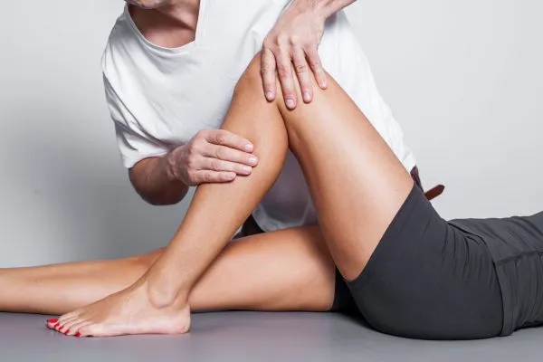

Hofte, knæ og ankelregion
Smerter og nedsat bevægelighed i kroppens led er hverdag for mange. Muskler spænder op, irritation og inflammation forværrer smerter og begrænser muligheden for øvelser og træning. Vi har gode erfaringer med helkropsorienteret behandling, når der opstår smerter i et eller flere led.